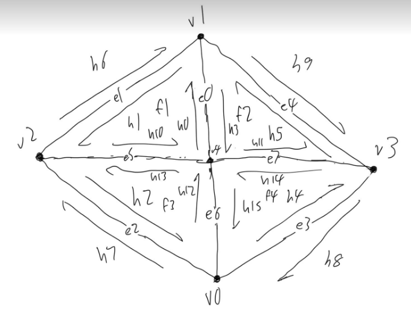

Implementation: In this part, we implemented the bezier curve interpolation using de Casteljau's algorithm. Given n control points, at each level we interpolate bewteen each two points using the lerp function to generate a new point, thus resulting in n-1 new points after one step of the algorithm. We run this algorithm until there's only one point left, and this point is on the bezier curve. Here is an example of running the algorithm.
Step 1In this part, we apply the
Implementation: For the edge flip operation, we relied heavily on this document to guide our thinking. We initially wanted to try simply rotating the orientation of the vertices and matching their associated relationships to halfedges, and edges after the rotation. However, we quickly realized this wasn't doable because we would have to reassign pointers for all the edges each vertex is connected to outside of the two triangles (overcomplicating our task).
We then decided to do pointer reassignments only. After figuring out how to grab all of the elements we needed (10 halfedges, 4 vertices, 4 edges, and 2 faces), it was only a matter of connecting the dots and reassigning each element's twin, vertex, edge, halfedge, and/or face to the new relationships after making the flip.
Debugging: Fortunately we didn't run into any problems debugging after changing our implementation to only doing pointer reassignments. However when we initially tried rotating the vertices, we ran into an infinite loop and the edge wouldn't flip which we thought was pretty interesting.
Pictures of our Flips!
Flipped Teapot
Regular Teapot
Implementation: After implementing the edge flip operation, the edge split operation was fairly straight forward. We first referenced a diagram from ED that would allow us to understand the new relationships between each of the old edges, vertices, faces, and half edges and the new additional edges, vertices, faces, and half edges. It was the same process as edge flip only we had to create 6 new halfedges, 1 new vertex, 3 new edges, and 2 new faces and of course connect their attributes (twin, face, edge, etc.) to an element according to the diagram we referenced.
Diagram
Debugging: The only issue we ran into was setting the new vertex's position correctly. We set it to the midpoint of the wrong two vertices. It was a pretty easy fix after figuring out what the correct vertices should be based on the diagram.
Pictures of our Splits and Flips!
Split Teapot
Split and Flipped Teapot
Regular Teapot